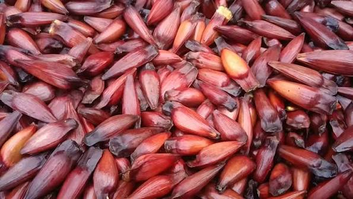
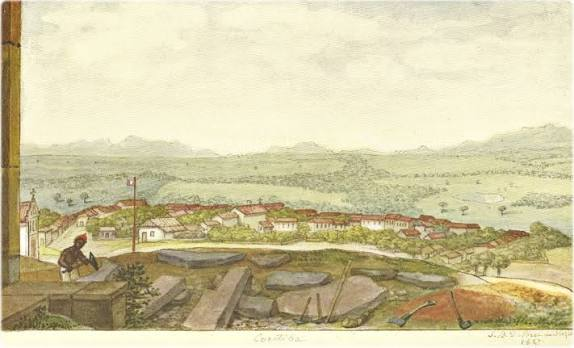
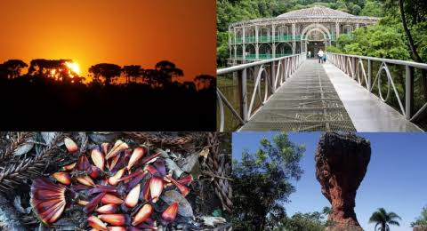

Importancia historica
A cultura do Paraná possui grande importância histórica por representar o processo de formação e desenvolvimento do estado ao longo dos séculos. Sua identidade cultural foi construída pela convivência entre povos indígenas, colonizadores portugueses, africanos e diversos grupos de imigrantes europeus e asiáticos, que contribuíram com seus costumes, tradições, crenças, idiomas, culinária e manifestações artísticas. A cultura do Paraná possui grande importância histórica por representar o processo de formação e desenvolvimento do estado ao longo dos séculos. Sua identidade cultural foi construída pela convivência entre povos indígenas, colonizadores portugueses, africanos e diversos grupos de imigrantes europeus e asiáticos, que contribuíram com seus costumes, tradições, crenças, idiomas, culinária e manifestações artísticas.

contexto historico
A cultura do Paraná começou a se desenvolver desde o período colonial, entre os séculos XVI e XVII, quando os primeiros povos indígenas habitavam a região. Grupos como os Guarani, Kaingang e Xetá já possuíam costumes, crenças, línguas e formas de organização social que constituem a base da história cultural do estado.

importancia cultural
A cultura do Paraná é de grande importância porque representa a história, a identidade e a diversidade da população do estado. Formada pela contribuição de povos indígenas, portugueses, africanos e diversos grupos de imigrantes, como italianos, alemães, poloneses, ucranianos e japoneses, ela preserva tradições que refletem a riqueza cultural paranaense.

curiosidades
curiosidades 1
🐟 Barreado: prato típico do litoral do Paraná, preparado lentamente em panela bem vedada. É especialmente associado a cidades como Morretes e Antonina.